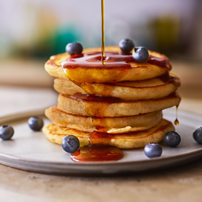

Pancake recipe

A quick and easy recipe to make pancakes!
Ingredients
Method
Add the flour, eggs, and milk to a bowl
Whisk the mixture and set it aside for half an hour
Heat a pan and add some sunflower oil
Add some of the mix to the pan and cook for a few minutes
Flip and cook the other side until done, then serve